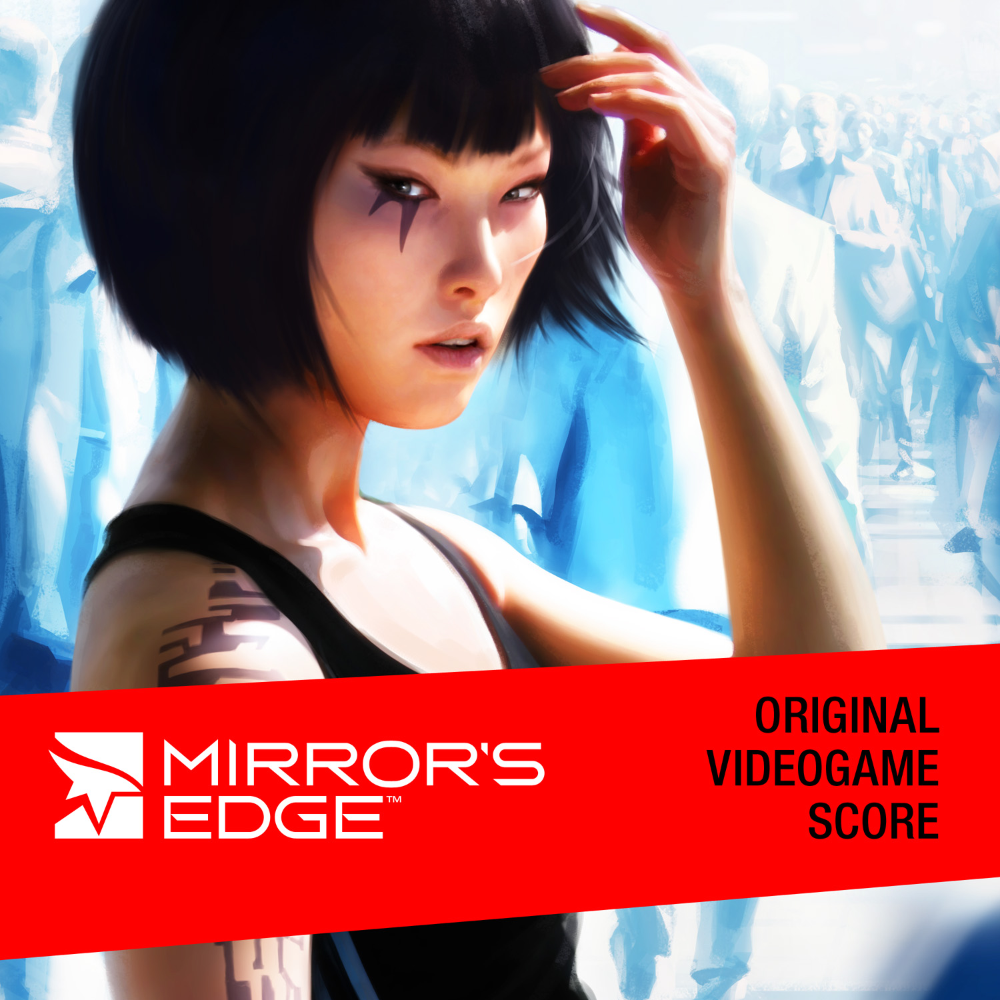

Michael: Let's talk about your game soundtrack debut Mirror's Edge. Why did you decide to work on game music? How did you get to work on this particular project?
Michael: Writing solo music and working on a soundtrack that will accompay existing imagery are two very different things. Were there any significant artistic and technical differences from your solo work? What were the terms and requirements have you got from EA and DICE? With what materials did the developers provide you with?
Magnus Birgersson: I got the complete manuscript, concept art and play through videos. DICE provided me with a lot of detailed information about each level, the characters and the story. Since I wrote the music in my studio in Gothenburg, I had to travel to Stockholm a couple of times to see how everything was coming together and make sure that the music and the game worked together as well as possible. Me and the Audio Director were in touch almost every day during the music production. On my visits to DICE in Stockholm I met the level designers and we played through the levels and we talked about how the music should feel. We tested the music with the game, trying out each level to see if we should trigger calmer music, more intense music, or maybe complete silence. I’ve seen Mirror’s Edge in action from the very early stages up to the final version.
If I was to compare this process to writing music for my own albums, it’s like night and day. I had to rethink my way of composing since I didn’t have the same linear structure to rely on, compared to when I am composing for Solar Fields.

It was also a huge challenge for me - there was a lot of music that had to be created during a short period of time. Finding out how to capture the feeling of Faith [Mirror's Edge's protagonist] and the story and reflect that in the music was quite challenging. Another challenge was to get the music to play seamlessly in the game and get the music to interact with the player. The idea for the music was that there should be no gaps while playing, which meant I had to compose all parts for each level so that they would work together even if there was a tempo change or a different chord structure. Since there are so many different sounding parts in each level that reflect Faith’s mood, it was a big effort to get these parts to work together smoothly. The goal was that the player wouldn't hear the changes between the different parts and rather feel the musical changes. The result is fantastic, but it was quite tricky to get it to work as we wanted.
I wrote around 150 minutes of music in total. The main scoring took 4-5 months, and after that I did some polishing and edits to align the music with changes in the game. Each level has its own theme and feeling that reflects the mood of Faith and the game play. I'm very happy to say that I got 100% creative freedom to do what I wanted. Of course there was a structure that I had to follow, for example we had different categories for each level, such as ambiences / puzzles / chases / combats. Other than that I had total freedom, and from the response I got up till today I think I added a lot of identity to the score and the game.
Michael: So far, Mirror's Edge is your only game soundtrack. Do you plan to continue working on games, or do you currently have any game projects in the making?
Magnus Birgersson: Until recently, I've been busy finishing my 11th Solar Fields album called Random Friday. The album was released in April, after that there will be some touring and then we'll see ;) Due to NDAs, I cant talk about any projects, but you will definitely hear more music in games from me.
http://www.game-ost.com/articles.php?id=288&action=view
Mirror's Edge is a truly brilliant, often transcendent game, and its electronic score is a major component of the immersive experience. The game experience "unlocks" various bits and pieces of the tracks created for the soundtrack. However, the digital album release itself is the only way to experience the tracks in their entirety and also in exceptional clarity.
"Introduction" provides the first taste of the electronic excellent to expect from the soundtrack. It draws listeners into the world of Mirror's Edge near completely, both in the game and as a retrospective stand-alone experience. "Edge & Flight" thereafter takes minds on a much deeper journey. The ultra-radiant yet striking cold soundscape of the introductory segment befits the atmosphere of the featured city. The absorption rate only magnifies as the track transitions into the theme for the first level, moving between ethereal and turbulent sections before culminating in a truly awe-inspiring climax at 4:53.
"Pirandello Kruger" excels in both originality and emotional connection. It opens with a somber, somewhat desperate phrase that is truly distressing and touching, then gradually picks up into the "combat" section before rolling into an exceptional synth section at about four minutes in. "Shard," certainly one of the album's strongest and most memorable tracks, opens with another transcendent section that relays hope and the sense that the mission is finally almost over, culminating in a driving beat that maintains its pace through the rescue of the protagonist's sister.
At the end of the soundtrack, the "moneymaker" — the vocal track "Still Alive" — takes hold. This is a well-sung and memorable song in its own right, featuring gorgeous piano backing and the beautiful voice of Lisa Miskovsky. Although more mainstream than the instrumental tracks, it still fits and ends the game and soundtrack well. Listeners also should note that a maxi single and remixes EP were also released dedicated to this song.
All things considered, if Joe Techno had heard this soundtrack in its entirety even in the absence of any knowledge or awareness of the game, I believe that he would find it to be thoroughly excellent nonetheless; original, fresh, and, above all, emotionally impacting electronic bliss. The game's imagery, however, does indeed provide the perfect backdrop for it all, and the two go hand-in-hand exactly as intended.
http://www.game-ost.com/albums/2330/mirror's_edge_original_videogame_score/
OSV: What were your favourite, and least favourite, aspects of writing the music forMirror’s Edge?
Solar Fields: Hmm, let’s see, seriously only good things. First of all it was great fun to work on this project and that’s the key for it all. The project was super interesting; I was following the game from the very beginning to the final product. It was a huge challenge for me to do this since this was my first “big” work in this area. I had to rethink my whole way of composing since I had to keep the story, feelings and environments in mind during the composing period.
http://www.originalsoundversion.com/one-musician-to-another-solar-fields-interview/